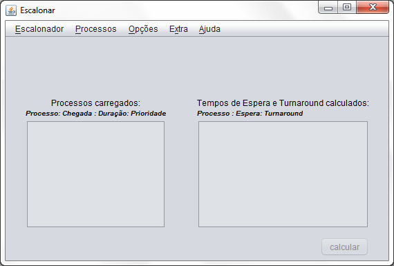
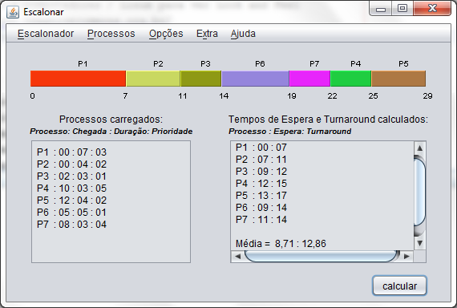
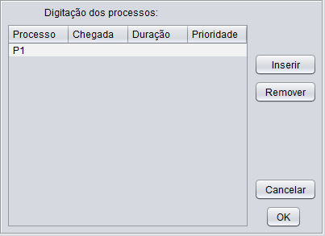
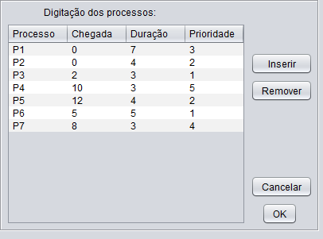

Escalonar
v 1.0
Introdução
Considerações
Gerais
Requisitos
Tela
Inicial
Algoritmos
Implementados
Entrada
e Saída de
Processos
Digitação
de
Processos
Opções
Gerar
saída em pdf
Licença
Introdução
Este
software foi escrito
para auxiliar o ensino de algoritmos de escalonamento de processos em
sistemas operacionais.
Como resultado de sua execução é
exibido um
gráfico de Gantt representando a escolha e
execução de cada processo no escalonamento, e
também são calculados os tempos de
espera e total de
execução de cada processo, e os tempos
médios para
o conjunto de processos fornecido.
Considerações
Gerais
- O ambiente considerado
é
monopricessado.
- Todos os processos
são
orientados (limitados) a processador, ou seja, não fazem I/O.
- A trova de contexto tem
duração nula (zero).
- Não
são exibidas
unidades de medida para os tempos, mas são considerados
valores inteiros
representando
milessegundos.
- A escolha dos processos no
escalonamento segue a seguinte ordem:
- política do
algoritmo
(por exemplo, duração no caso do SJF)
- ordem de chegada
- nome do processo (como
último critério para desempate)
Requisitos
É necessário Java 6 instalado na
máquina para a
execução correta de todas as funcionalidades do
aplicativo.
Tela Inicial

Na tela inicial do aplicativo é possível acionar
os
seguintes menus:
- Escalonador: permite
escolher qual o algoritmo de escalonamento
será executado. Uma marca será mostrada no menu
indicando
qual o algoritmo atualmente selecionado. O default é FIFO;
- Processos: permite inserir
os processos que serão
utilizados no escalonamento ou gravá-los em arquivo para uso
posterior;
- Opções:
permite alterar opções de
interface do aplicativo
- Extra: permite exportar os
resultados do escalonamento para
um arquivo no formato pdf;
- Ajuda:
informações básicas sobre o
funcionamento do aplicativo.
Também na tela principal é possível
acionar o
botão calcular
que
executa o escalonamento de acordo com os parâmetros
fornecidos.Como exemplo de resultado de execução,
observe
a tela a seguir, onde são escalonados sete processos
utilizando
o algoritmo FCFS.
O quadro à esquerda exibe os dados de entrada, o
quadro
à direita exibe os dados resultantes do escalonamento. O
gráfico exibe a ordem em que os processos foram escalonados.
As
cores são aleatórias e podem ser alteradas
clicando
novamente no botão calcular.
Com os mesmos dados de entrada pode-se escolher outro algoritmo no menu
Escalonar
e clicar no
botão calcular
para
obter o resultado do escalonamento pelo algoritmo escolhido.

Algoritmos
implementados
Os seguintes algoritmos foram implementados:
- FCFS ( First Come-First Served
: O primeiro a chegar
é o primeiro a ser
atendido ):
- Algoritmo não
preempitivo. Escalona os processos por
ordem de chegada
- SJF ( Shortest Job First
: Menor processo primeiro )
- Algoritmo não
preemptivo. Escalona os processos
(considerando os processos que já estão na fila
de
prontos) de acordo com o tempo de duração. Os
processos
de menor duração são escalonados
primeiro.
- SRT ( Shortest Remaining
Time: Menor tempo restante primeiro
)
- É a
versão preemptiva do SJF. Escalona os
processos (considerando
os
processos que já estão na fila de prontos) de
acordo com
o tempo de
duração restante. Os processos de menor
duração
restante são escalonados primeiro. Por ser preemptivo, um
processo pode
ser interrompido caso durante a sua execução
chegue um
outro processo cuja duração seja menor do que a
duração restante deste processo em
execução. Duração restante
significa o
tempo que falta para o processo terminar sua
execução.
- PRIORIDADE NP
- Algoritmo não
preemptivo. Escalona os processos
(considerando os
processos que já estão na fila de prontos) de
acordo com
o seu valor de prioridade. Os processos com maior valor de prioridade
são escalonados primeiro.
- PRIORIDADE P
- Algoritmo preemptivo.
Escalona os processos (considerando os
processos que já estão na fila de prontos) de
acordo com
o seu valor de
prioridade. Os processos com maior valor de prioridade são
escalonados
primeiro. Por ser preemptivo, um processo pode ser
interrompido
caso durante a
sua execução chegue um outro processo cuja
prioridade
seja maior do que a prioridade deste processo em
execução.
- ROUND ROBIN
- Algoritmo preemptivo.
Escalona os processos (considerando os
processos que já estão na fila de prontos) de
acordo a
ordem de entrada na fila. A cada Quamtum
de tempo há uma interrupção do
processo em
execução para que o próximo processo
da fila seja
executado.
Entrada e
Saída de Processos
- Lendo de um arquivo: carrega
os dados dos processos de entrada a
partir do arquivo fornecido como entrada. É feita uma
validação para verificar se o arquivo
está no
formato esperado e, em caso de formato ou dados inválidos, o
arquivo não é carregado.
- Gravando em um arquivo:
grava em arquivo os dados dos processos
de entrada. Os dados de saída, calculados no escalonamento,
não são gravados.
- Digitando os dados: abre a
tela para digitação dos
processos a serem usados no escalonamento.
Os arquivos utilizados como entrada e saída são
do tipo
texto, com a extensão .prc.
Os dados de cada um dos processos deve ser colocado em uma linha
separada. Cada uma destas linhas deve conter as seguintes
informações
(em ordem) separadas por ponto-e-vírgula:
chegada
; duração ;
prioridade
Os valores devem ser
números inteiros.
Digitação
de Processos

Nesta tela é possível digitar os processos que
serão utilizados como entrada do escalonamento. Caso nenhum
processo tenha sido digitado ainda, somente uma linha será
apresentada com o rótulo P1
sendo apresentado no nome do processo. Os rótulos
são
gerados automaticamente não sendo permitido sua
edição.
Se já houverem dados de processos digitados anteriormente,
todos
eles serão apresentados para edição,
como
ilustrado a seguir.

Os seguntes botões são apresentados na tela de
edição:
- Inserir: acrescenta
uma nova linha para entrada de um
novo processo;
- Remover: remove a linha onde
o cursor de edição
estiver posicionado;
- Cancelar: cancela todo o
efeito de edição atual
voltando à tela inicial sem nenhuma
modificação
nos processos;
- OK: confirma a
edição feita no conjunto de
processos. Os dados são validados antes de serem atualizados
na
tela principal.
Os rótulos dos processos serão refeitos
(renumerados a
partir de 1) caso tenha havido remoção de algum
processo.
Opções
- Alterando o idioma: Os
idiomas disponíveis são
Português e Inglês. O idioma padrão ao
abrir o
aplicativo é determinado pelo Sistema Operacional em uso.
- Alterando o tipo de
gráfco: Existem três diferentes
modelos de desenho aplicados para o gráfico que podem ser
escolhidos nesta opção de menu.
Gerar saída
em formato pdf
Por meio desta opção é
possível gerar um
arquivo em formato pdf contendo os dados dos processos de entrada, o
gráfico de Gantt resultante, e dos dados calculados para o
conjunto de processos durante o escalonamento.
Licença

A obra Escalonar de Emerson dos
Santos Paduan foi licenciada com uma Licença Creative
Commons - Atribuição - Uso Não-Comercial - Obras
Derivadas Proibidas 3.0 Brasil.